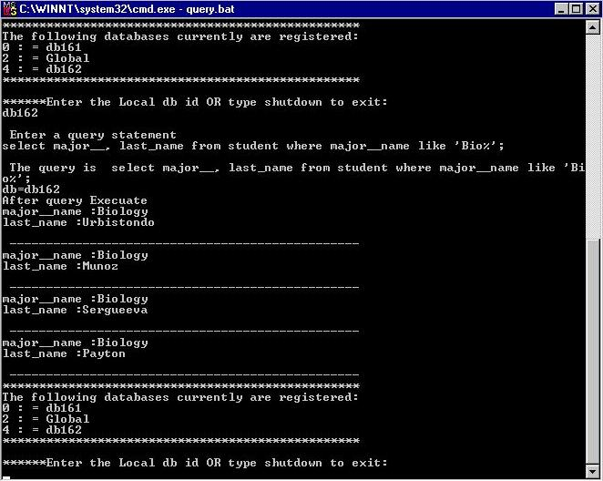

Our next example sends a query to another local site, 'db162'. The query is "select students' last names and their major department names where their major department names are like 'Bio%'".
Home
Previous
Next
